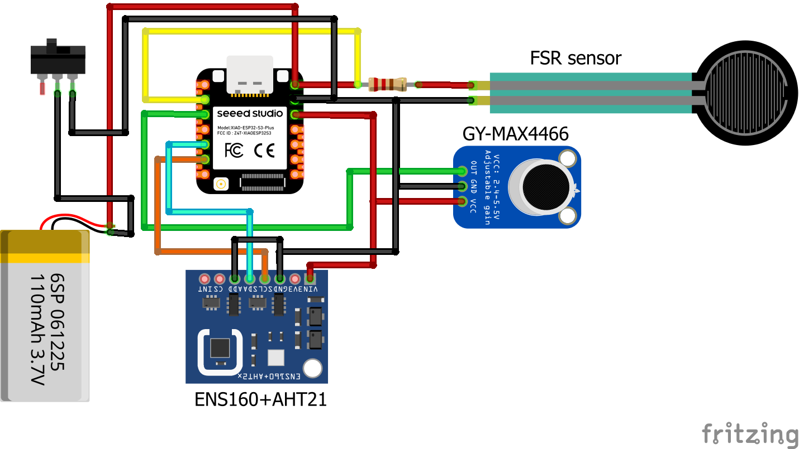
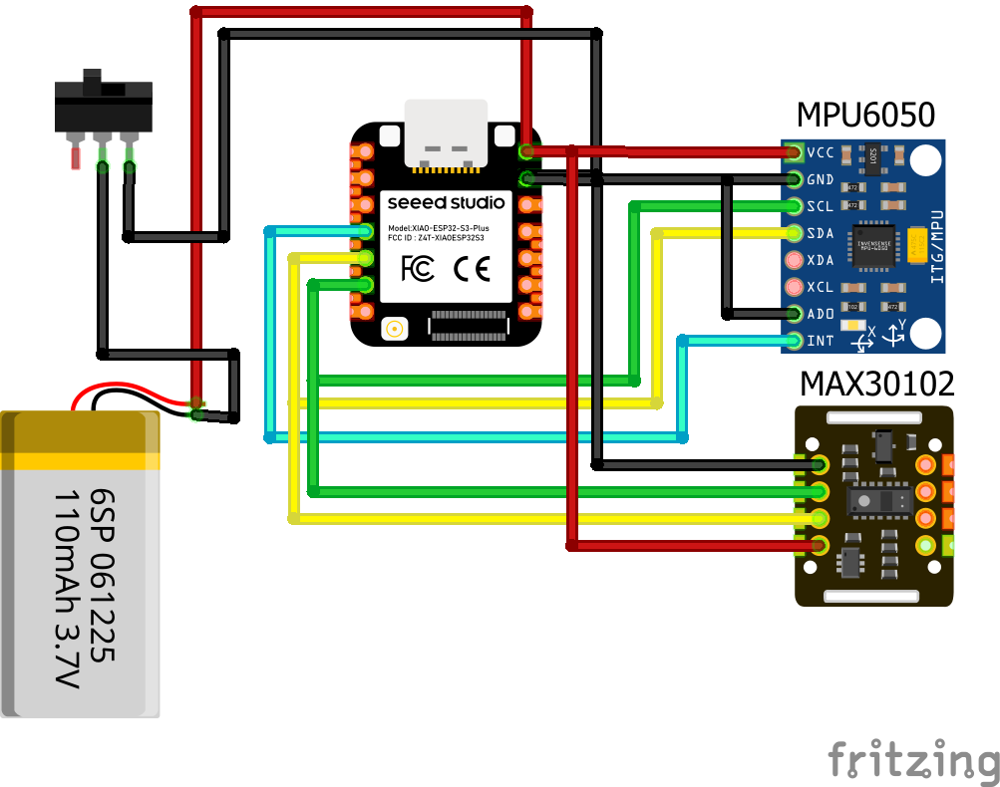

NeuroGuard
Smart Pacifier — Research / Bench Prototype · اللهّاية الذكيّة — نموذج بحثيّ ومعمليّ
ENThe idea
NeuroGuard is a two-node infant-monitoring platform for research and education. A smart pacifier hub captures sucking dynamics, breath sounds, and the micro-environment around the crib. A foot bracelet captures pulse, heart-rate variability, blood-oxygen saturation, motion, and posture.
The two nodes cooperate wirelessly:
- The bracelet advertises as a Bluetooth Low Energy peripheral and pushes its data to the pacifier once per second.
- The pacifier hub subscribes to those notifications,
merges them with its own sensors, and hosts a self-contained
WiFi hotspot + web dashboard. Any phone or laptop joins
the
NeuroGuard-Pacifiernetwork and openshttp://192.168.4.1to see everything live.
There is no cloud, no MQTT broker, and no external server: everything happens on the two boards.
ENComponents — role, readings, states
Pacifier hub XIAO ESP32-S3
Carries the sensors that live inside the pacifier itself (nipple + shield) and doubles as the system's brain. Runs three roles at once: sensor sampler, BLE central (subscribed to the bracelet), and WiFi access point with an embedded HTTP + JSON server.
RFP-602 — force-sensing resistor pin D1
- Role
- Measure sucking pressure through the pacifier nipple → non-nutritive sucking (NNS) dynamics.
- Wiring
- 3V3 → 47 kΩ → D1 → RFP-602 → GND (pull-up divider). At boot, a 64-sample baseline is captured — keep the pacifier unpressed for the first second.
- Reads
- Every second:
fsr_pct_now(0–100 %),sucks_per_min,bursts_per_min,mean_peak_pct,mean_burst_sec,regularity_cv(coefficient of variation of intra-burst inter-suck intervals — lower means more rhythmic). - States
- Idle (below 15 %). Active (crossed 15 %, tracking the peak). Released (dropped below 8 % → suck event pushed to the 60 s ring buffer with its peak amplitude). A "burst" is a run of sucks whose inter-suck gap stays under 1.5 s.
MAX4466 — electret microphone pin D2
- Role
- Pick up airflow sounds through the pacifier → respiratory rate + apnea watchdog.
- Reads
- Every second:
mic_pkpk_now(peak-to-peak amplitude over the last 50 ms window),resp_events_per_min,est_breaths_per_min(≈ events ÷ 2 — one event per inhale and one per exhale),seconds_since_last_breath,apnea_alert. - States
- Idle (pkpk below 300 counts). Event (pkpk crossed 300 → breath event pushed if 250 ms have passed since the last one). Refractory (250 ms lockout after each event so one loud inhalation isn't counted twice).
ENS160 + AHT21 — environment combo I²C D4/D5
- Role
- Monitor the micro-climate in the crib: air quality, temperature, humidity.
- Reads
- Sampled at 1 Hz over I²C (ENS160 @ 0x52 with ADDR→GND, AHT21 @ 0x38).
temp_c,rh_pctfrom AHT21;eco2_ppm,tvoc_ppb,aqi(1–5) from ENS160. Temperature and humidity are fed back into the ENS160 compensation register each cycle for accurate eCO2. - States
- Warm-up — first ~3 min after power-on, ENS160 values are still stabilising. Ready — both sensors OK (
aht_ok=true,ens_ok=true). Recovering — I²C hiccup drops one of the flags to false and the hub retries.begin()on the next tick without rebooting. - AQI legend
- 1 excellent · 2 good · 3 moderate · 4 poor · 5 unhealthy.
Foot bracelet XIAO nRF52840 Sense
Small self-contained wearable. Samples its two sensors, computes summary
statistics, and pushes a 41-byte packet over BLE every second. Advertises
as NG-Bracelet under a custom NeuroGuard service UUID.
MAX30102 — pulse oximeter + PPG I²C @ 0x57
- Role
- Heart rate, blood-oxygen saturation, and heart-rate variability.
- Reads
- Dual-LED (IR + RED) at 100 Hz sample rate. Per second:
finger_present(IR ≥ 50 000 counts),ir_raw,hr_bpm,hr_src(which detector produced it),rr_last_ms,rr_mean_ms. HRV from a rolling 60-beat window:sdnn_ms,rmssd_ms,pnn50_pct. Every 3 s the SparkFun algorithm recomputesspo2_pctandspo2_validfrom a 100-sample buffer. - States
- PPG: No-finger (IR < 50 000 → all values reset). Contact (IR ≥ 50 000). Weak signal (AC envelope < 30 counts → no beat this cycle). HR source:
HRSRC_NONE(no reading),HRSRC_BEAT(per-beat detector, freshness < 4 s),HRSRC_ALGO(SpO2 algorithm's HR estimate, used when the per-beat detector goes stale). - Detector
- Custom adaptive-threshold beat detector: EMA-tracked DC baseline, positive-peak envelope with slow decay, 50 % threshold, 350 ms refractory. Feeds RR intervals in the 300–2000 ms range into a 60-slot ring for HRV stats.
MPU-6050 — inertial measurement unit I²C @ 0x68
- Role
- Motion detection, posture classification, long-stillness watchdog.
- Reads
- 3-axis accel + gyro at 50 Hz. AD0 tied to GND. Auto-gain-calibrated against gravity at boot (works around MPU6050 clones that quietly ignore range writes). Per second:
activity_index(1 s RMS of net |a|−1g, in g),pitch_deg,roll_deg,posture,motion_events_min(in the rolling 60 s window),seconds_since_movement,stillness_alert. - States
- Motion: Still (net acceleration < 0.15 g). Moving (crossed 0.15 g with 300 ms debounce → event pushed). Refractory (lockout to avoid double-counting a single kick). Posture (foot orientation, descriptive only): FLAT (|pitch|<20°, |roll|<20°), TILT_LEFT (roll<−60°), TILT_RIGHT (roll>60°), TOE_UP (pitch>60°), TOE_DOWN (pitch<−60°), TILTED (other), UNKNOWN.
ENCommunication
- BLE (bracelet → hub, 1 Hz). A byte-exact 41-byte
BraceletWirestruct is notified to the hub. Thestructis declared identically on both sides withstatic_assert(sizeof(BraceletWire) == 41), so the build fails if either side drifts. Custom service UUIDa1b2c3d4-9999-4a2b-9c1e-1a2b3c4d5e6f. The hub scans on boot and reconnects automatically on drop. - WiFi SoftAP + web dashboard (hub → phone/laptop). The
hub broadcasts SSID
NeuroGuard-Pacifier(WPA2 passwordneuroguard, channel 6). Any phone or laptop that joins openshttp://192.168.4.1and gets a single-page dashboard served from the hub's flash. The page polls/dataonce per second and returns the merged JSON view of both nodes.
ENAlert conditions
Every second the hub emits a packet with two flag fields, surfaced as banners on the dashboard:
apnea_alert— no breath sound detected for ≥ 10 s. Bench threshold; clinical apnea is closer to 20 s. Adjustable viaAPNEA_ALERT_SEC.stillness_alert— no infant motion detected for ≥ 120 s. Adjustable viaSTILL_ALERT_SEC.
There is no on-node buzzer or notification service in the current build; the web dashboard is the sole UI.
ENProgress
- Firmware — both nodes complete and streaming their full sensor set every second.
- Wireless link — BLE bracelet ↔ hub is byte-exact and reconnects automatically on drop.
- Web dashboard — WiFi SoftAP + embedded single-page dashboard shows live NNS, respiratory, environment, and bracelet panels.
- Detection algorithms — NNS sucks/bursts/regularity, respiratory events + apnea watchdog, custom PPG beat detector, HRV (SDNN/RMSSD/pNN50), SpO2, motion + posture + stillness.
- Calibration — threshold tuning against reference instruments (adult volunteers first, infant-proxy dummies next).
- Longer-session soak tests and bracelet battery-life characterisation.
- Enclosure integration and final packaging.
ARالفكرة
نيوروجارد منصّة مراقبة رضيع تتكوّن من عقدتين، لأغراض بحثيّة وتعليميّة. مركز اللهّاية الذكيّة يلتقط ديناميكيّات المصّ، وأصوات التنفّس، والمُناخ الدقيق حول السرير. حزام القدم يلتقط النبض، وتنوّع معدّل ضربات القلب، وتشبّع الأكسجين في الدم، والحركة، ووضعيّة القدم.
تتعاون العقدتان لاسلكيًّا:
- الحزام يُعلن عن نفسه طرفًا محيطيًّا في بروتوكول Bluetooth Low Energy، ويرسل بياناته إلى اللهّاية مرّة كلّ ثانية.
- مركز اللهّاية يشترك في هذه الإشعارات، ويدمجها مع
مستشعراته، ثمّ يستضيف نقطة اتّصال WiFi ولوحة بيانات ويب
ذاتيّة الاكتفاء. يستطيع أيّ هاتف أو حاسوب الانضمام إلى الشبكة
NeuroGuard-Pacifierوفتح الرابطhttp://192.168.4.1لمشاهدة كلّ شيء مباشرًا.
لا يوجد سحابة، ولا خادم MQTT، ولا خادم خارجيّ: كلّ شيء يجري على اللوحتَين.
ARالمكوّنات — الدور والقراءات والحالات
مركز اللهّاية XIAO ESP32-S3
يحمل المستشعرات التي تلامس اللهّاية نفسها (الحلمة + الدرع)، ويؤدّي دور دماغ النظام. يشغّل ثلاثة أدوار في وقت واحد: أخذ العيّنات من المستشعرات، ومركزيّ BLE (مشترك في إشعارات الحزام)، ونقطة وصول WiFi مع خادم HTTP + JSON مضمّن.
RFP-602 — مستشعر القوّة المدخل D1
- الدور
- قياس ضغط المصّ عبر حلمة اللهّاية ← ديناميكيّات المصّ غير الغذائي (NNS).
- التوصيل
- 3V3 → 47 كيلو أوم → D1 → RFP-602 → GND (مقسّم سحب علوي). عند التشغيل يُلتقط الخطّ القاعديّ من متوسّط 64 عيّنة — يجب إبقاء اللهّاية غير مضغوطة في الثانية الأولى.
- القراءات
- كلّ ثانية:
fsr_pct_now(0–100 %)،sucks_per_min،bursts_per_min،mean_peak_pct،mean_burst_sec،regularity_cv(معامل التغيّر للفواصل بين المصّات داخل الرَشقة — الأقلّ يعني أكثر انتظامًا). - الحالات
- خامل (تحت 15 %). نشط (تجاوز 15 %، تتبّع الذروة). منفصل (نزل تحت 8 % ← يُدفع حدث مصّ إلى حلقة الـ 60 ثانية مع سعته الذروة). "الرَشقة" هي سلسلة مصّات فاصلها الزمنيّ يبقى تحت 1.5 ثانية.
MAX4466 — ميكروفون كهروضغطيّ المدخل D2
- الدور
- التقاط أصوات جريان الهواء عبر اللهّاية ← معدّل التنفّس + مراقب انقطاع النفس.
- القراءات
- كلّ ثانية:
mic_pkpk_now(السعة من قمّة إلى قمّة خلال آخر نافذة 50 مللي ثانية)،resp_events_per_min،est_breaths_per_min(≈ عدد الأحداث ÷ 2 — حدث للشهيق وآخر للزفير)،seconds_since_last_breath،apnea_alert. - الحالات
- خامل (pkpk أقلّ من 300). حدث (تجاوز 300 ← يُدفع حدث تنفّس إن مضى 250 مللي ثانية منذ الأخير). فترة كبح (قفل 250 مللي ثانية بعد كلّ حدث حتّى لا يُحسب شهيق قويّ مرّتين).
ENS160 + AHT21 — وحدة قياس البيئة I²C على D4/D5
- الدور
- مراقبة المُناخ الدقيق داخل السرير: جودة الهواء، ودرجة الحرارة، والرطوبة.
- القراءات
- عيّنة كلّ ثانية عبر I²C (ENS160 على العنوان 0x52 مع ADDR موصول بالأرضي، وAHT21 على العنوان 0x38).
temp_c،rh_pctمن AHT21؛eco2_ppm،tvoc_ppb،aqi(1–5) من ENS160. تُغذَّى الحرارة والرطوبة إلى سجلّ تعويض ENS160 في كلّ دورة لضمان دقّة eCO2. - الحالات
- إحماء — أوّل ~3 دقائق بعد التشغيل، قيم ENS160 لم تستقرّ بعد. جاهز — كلا المستشعرَين OK (
aht_ok=true،ens_ok=true). يتعافى — تعثّر مؤقّت في I²C ينزل أحد العلمَين إلى false، ويُعيد المركز استدعاء.begin()في الدورة التالية دون إعادة تشغيل. - دلالة AQI
- 1 ممتاز · 2 جيّد · 3 معتدل · 4 سيّئ · 5 غير صحّي.
حزام القدم XIAO nRF52840 Sense
جهاز صغير قابل للارتداء ذاتيّ الاكتفاء. يأخذ عيّنات مستشعرَيه، ويحسب
إحصاءات ملخّصة، ويدفع حزمة بحجم 41 بايت عبر BLE كلّ ثانية. يُعلن نفسه
باسم NG-Bracelet بمعرّف خدمة NeuroGuard مخصّص.
MAX30102 — مقياس النبض والأكسجين I²C على 0x57
- الدور
- معدّل ضربات القلب، وتشبّع الأكسجين، وتنوّع معدّل القلب.
- القراءات
- مصباحان (IR + الأحمر) بمعدّل عيّنة 100 هرتز. كلّ ثانية:
finger_present(IR ≥ 50 000)،ir_raw،hr_bpm،hr_src(أيّ كاشف أنتجه)،rr_last_ms،rr_mean_ms. حساب HRV من نافذة 60 نبضة متدحرجة:sdnn_ms،rmssd_ms،pnn50_pct. كلّ 3 ثوانٍ تُعيد خوارزميّة SparkFun حسابspo2_pctوspo2_validمن مخزّن بحجم 100 عيّنة. - الحالات
- PPG: لا يوجد إصبع (IR < 50 000 ← تُصفَّر كلّ القيم). تلامس (IR ≥ 50 000). إشارة ضعيفة (مغلّف AC أقلّ من 30 ← لا نبضة هذه الدورة). مصدر HR:
HRSRC_NONE(لا قراءة)،HRSRC_BEAT(كاشف النبضة، تحديث خلال أقلّ من 4 ثوانٍ)،HRSRC_ALGO(تقدير HR من خوارزميّة SpO2، يُستخدم عند تقادم كاشف النبضة). - الكاشف
- كاشف نبض مخصّص متكيّف العتبة: خطّ قاعديّ متتبَّع بمرشّح EMA، مغلّف ذروة موجب بتحلّل بطيء، عتبة 50 %، وفترة كبح 350 مللي ثانية. يُغذّي فواصل RR في نطاق 300–2000 مللي ثانية إلى حلقة من 60 خانة لحساب إحصائيّات HRV.
MPU-6050 — وحدة قياس بالقصور الذاتي I²C على 0x68
- الدور
- كشف الحركة، وتصنيف الوضعيّة، ومراقب السكون الطويل.
- القراءات
- مسارع + جيروسكوب ثلاثيّ المحاور بمعدّل 50 هرتز. AD0 موصول بالأرضي. مع معايرة تلقائيّة للربح مقابل الجاذبيّة عند التشغيل (لتجاوز نُسخ MPU6050 المقلَّدة التي تتجاهل أوامر تغيير النطاق بصمت). كلّ ثانية:
activity_index(جذر متوسّط مربّعات صافي |a|−1g خلال ثانية بوحدة g)،pitch_deg،roll_deg،posture،motion_events_min(في نافذة 60 ثانية)،seconds_since_movement،stillness_alert. - الحالات
- الحركة: ساكن (صافي التسارع تحت 0.15 g). متحرّك (تجاوز 0.15 g مع كبح 300 مللي ثانية ← يُدفع حدث). فترة كبح (قفل لتجنّب عدّ ركلة واحدة مرّتين). الوضعيّة (وصف لوضع القدم فقط): مستوٍ FLAT (|pitch|<20°، |roll|<20°)، مائل يسارًا (roll<−60°)، مائل يمينًا (roll>60°)، الأصابع لأعلى (pitch>60°)، الأصابع لأسفل (pitch<−60°)، مائل، غير معروف.
ARالاتّصال
- BLE (الحزام ← المركز، 1 هرتز). يُرسَل إشعار بحزمة
BraceletWireبحجم 41 بايت تمامًا. تُعرَّف بنية C بشكل متطابق على الجانبَين معstatic_assert(sizeof(BraceletWire) == 41)، بحيث يفشل التصريف إن انحرف أحد الطرفَين. معرّف الخدمة المخصّصa1b2c3d4-9999-4a2b-9c1e-1a2b3c4d5e6f. يفحص المركز عند التشغيل ويعيد الاتّصال تلقائيًّا عند انقطاعه. - نقطة اتّصال WiFi + لوحة الويب (المركز ← الهاتف/الحاسوب).
يبثّ المركز الشبكة
NeuroGuard-Pacifier(كلمة سرّ WPA2:neuroguard، على القناة 6). يستطيع أيّ هاتف أو حاسوب ينضمّ إليها فتحhttp://192.168.4.1ورؤية لوحة أحاديّة الصفحة تُقدَّم من ذاكرة فلاش المركز. تسحب الصفحة بيانات من/dataكلّ ثانية وتُرجع رؤية JSON موحّدة للعقدتَين.
ARشروط التنبيه
كلّ ثانية يُرسل المركز حزمة تحوي علمَين، يظهران كشرائط تنبيه على اللوحة:
apnea_alert— لم يُكتشف صوت تنفّس منذ ≥ 10 ثوانٍ. عتبة مِعمليّة؛ العتبة السريريّة أقرب إلى 20 ثانية. قابلة للضبط عبرAPNEA_ALERT_SEC.stillness_alert— لم تُكتشف حركة رضيع منذ ≥ 120 ثانية. قابلة للضبط عبرSTILL_ALERT_SEC.
لا يوجد جرس على العقدة ولا خدمة إشعارات في البنية الحاليّة؛ لوحة الويب هي الواجهة الوحيدة.
ARحالة التقدّم
- البرمجيّات الثابتة (Firmware) — العقدتان مكتملتان وتُرسلان مجموعة المستشعرات كاملةً كلّ ثانية.
- الرابط اللاسلكيّ — رابط BLE بين الحزام والمركز متطابق بايت-إلى-بايت ويعيد الاتّصال تلقائيًّا عند الانقطاع.
- لوحة الويب — نقطة اتّصال WiFi ولوحة أحاديّة الصفحة مضمّنة تعرض بيانات NNS والتنفّس والبيئة والحزام مباشرًا.
- خوارزميّات الكشف — مصّات NNS ورَشقات وانتظام، أحداث التنفّس ومراقب انقطاع النفس، كاشف نبض PPG مخصّص، HRV (SDNN/RMSSD/pNN50)، SpO2، حركة ووضعيّة وسكون.
- المعايرة — ضبط العتبات مقابل أجهزة مرجعيّة (متطوّعين بالغين أوّلاً، ثمّ دمى محاكاة رضيع).
- اختبارات ثبات لجلسات أطول وقياس عمر البطاريّة في الحزام.
- تكامل العلبة والتغليف النهائيّ.
EN · ARDiagrams · المخطّطات
Wiring diagrams and mechanical / electrical blueprints for the two nodes. مخطّطات التوصيل، والمخطّطات الميكانيكيّة والكهربائيّة للعقدتَين.

